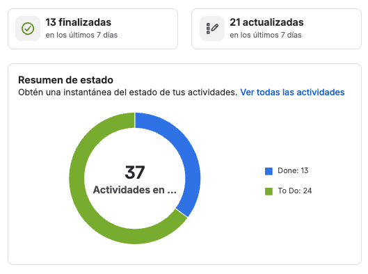
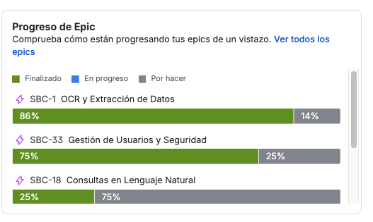
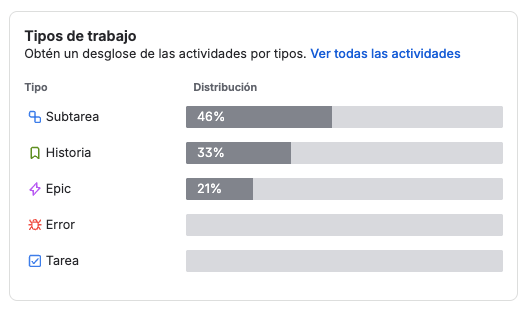
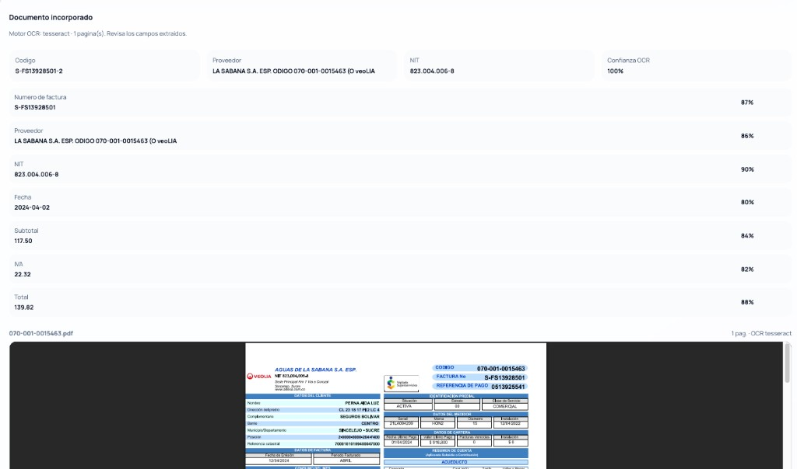
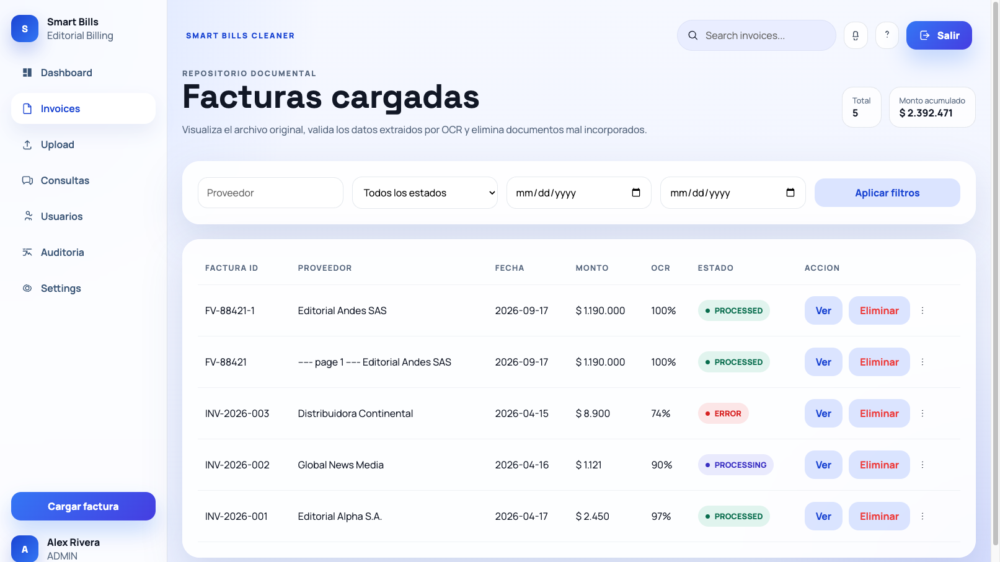
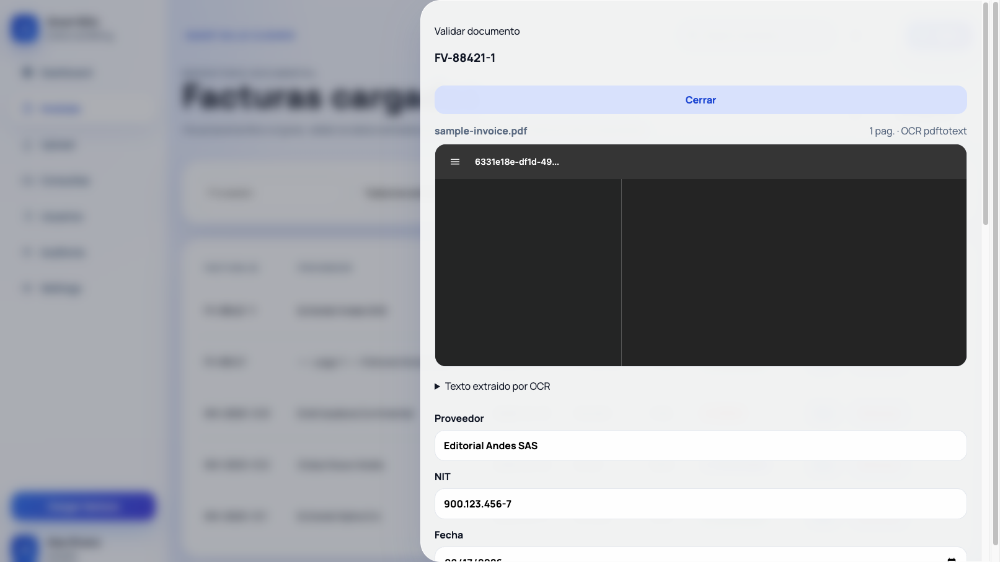
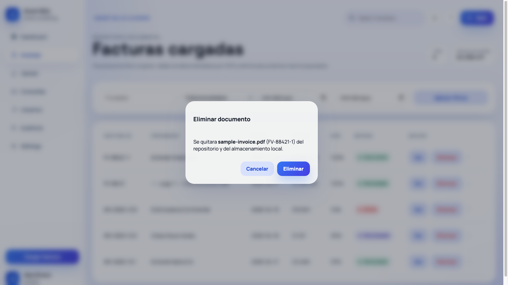
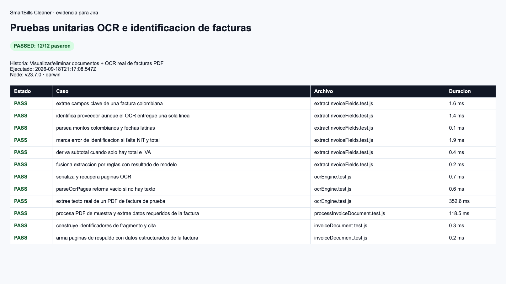
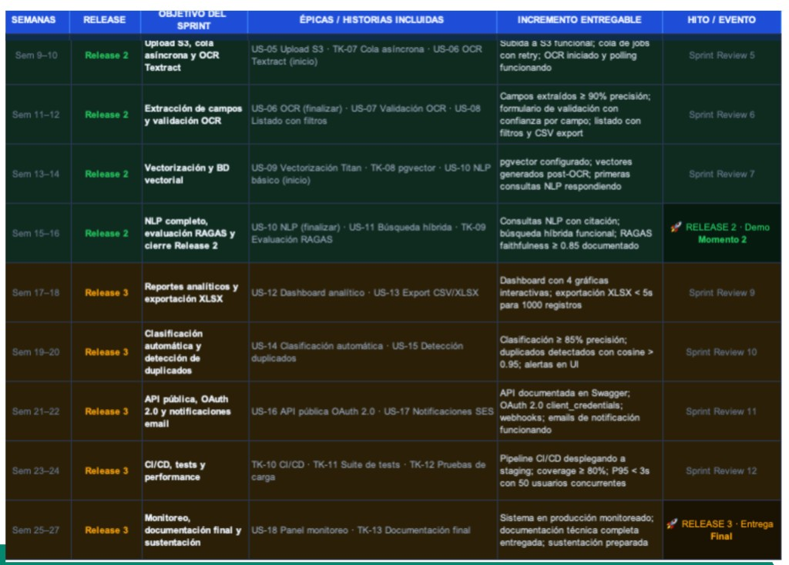
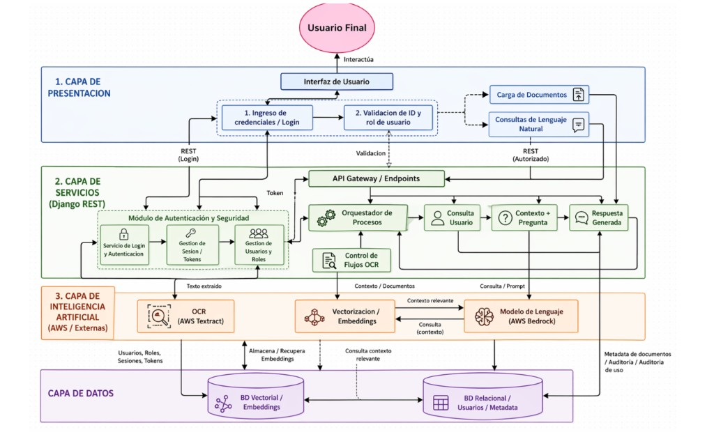

Review, retrospectiva, planning y actualización de artefactos
Automatización de lectura y clasificación de facturas con OCR e IA. Este deck cierra el Sprint 3 (ingesta, OCR real, CRUD y citas) y abre el Sprint 4 (vectorización y RAG). Responsable único: Miguel Rincón, con roles Scrum simulados (PO / SM / Developer) en momentos separados.
1. Sprint review del sprint anterior
Sprint 3: qué se comprometió, qué se entregó y qué se verificó
Objetivo comprometido: “Dejar operativo el flujo central de ingesta y extracción de facturas.”
Contexto: el Sprint 2 ya había cerrado 5/5 (SBC-34, SBC-41, SBC-38, SBC-48, SBC-52). El review de este ciclo es el Sprint 3.
| ID | Compromiso | Entregado en código | Verificado |
|---|---|---|---|
| SBC-22 | Identificar y citar páginas/secciones que respaldan cada respuesta | chunk_source = factura_id:página, citas [Factura X, pág. Y], clic al fragmento en Consultas | Criterios 1–3 del ticket. Unitarias de citas. |
| SBC-4 | Visualizar y eliminar documentos cargados | GET/DELETE /api/invoices, visor autenticado, listado con Ver/Eliminar | Capturas de listado y confirmación. Auditoría DELETE. |
| SBC-3 | Identificar proveedor, NIT, total, subtotal, IVA y fecha; corregir a mano | extractInvoiceFields + modal de validación editable | Campos no hallados = “No detectado”. 12/12 tests. |
| SBC-8 | Módulo OCR para PDF (propuesta Textract + Tesseract) | pdftotext / pdf.js / Tesseract (spa+eng). Sin Textract ni SQS aún | PDF de muestra PROCESSED en <1 s. Logs de motor OCR. |
Evidencia de progreso en Jira
Tablero del proyecto: 37 actividades, 13 en Done y 24 en To Do. En los últimos 7 días se finalizaron 13 y se actualizaron 21. Los epics avanzan de forma desigual: OCR (SBC-1) al 86 %, usuarios/seguridad (SBC-33) al 75 % y consultas NL (SBC-18) al 25 %. El backlog está partido sobre todo en subtareas (46 %) e historias (33 %); no hay issues de tipo Error.



Evidencia de la app
Factura real procesada con Tesseract: campos estructurados (número, proveedor, NIT, fecha, subtotal, IVA, total) junto al PDF original para validación (SBC-3 / SBC-8).





Incremento demostrable: login → carga PDF → OCR real → campos estructurados → ver/editar/borrar → consulta con cita a página.
Informe HTML: reporte-pruebas-unitarias.html
2. Sprint retrospective del sprint anterior
Qué funcionó, qué hubo que corregir y qué acción se acordó
Retro Sprint 3, con lecciones heredadas del Sprint 2.
Qué funcionó
- Sustituir OCR simulado por motor real desbloqueó evidencia defendible.
- Contrato de datos (proveedor, NIT, fecha, subtotal, IVA, total) se fijó el día uno.
- 12 unitarias ancladas a PDF de muestra, no a seeds inventados.
- La cadena de repliegue evitó depender de AWS para demostrar el flujo.
Qué hubo que corregir
- El cliente Prisma no regeneraba InvoiceChunk y el backend Docker caía en loop.
- El OCR “falso” contaminaba citas y el listado (proveedor derivado del filename).
- SBC-8 pedía Textract + SQS; el código local no los tiene todavía.
- SBC-7 pide soft-delete; hoy el DELETE es físico + log de auditoría.
- Jira menciona Next.js; el frontend verificado es React + Vite.
Acciones acordadas
- Documentar el stack real vs. propuesta en cada review (esta presentación).
- Sprint 4: no comprometer Textract hasta un spike < 1 día.
- Mantener Tesseract/pdftotext como repliegue obligatorio.
- Pasar citas (SBC-23/24) a “hecho” cuando el demo de Consultas esté grabado.
- Agregar soft-delete si entra en capacidad; si no, explicitarlo en el backlog.
3. Sprint planning del sprint siguiente
Sprint 4 · vectorización, RAG y cierre del componente inteligente
Capacidad: 1 persona · 4 semanas · ~24–32 h/semana · tope 20 SP.
Objetivo Dejar consultas en lenguaje natural ancladas a fragmentos indexados, con citas verificables y repliegue si el LLM no está disponible.
| ID | Tarea | Est. | Resp. | Dependencia |
|---|---|---|---|---|
| SBC-15 | Persistir embeddings y consulta semántica (hoy JSON local 96-d; evaluar pgvector) | 5 SP | Miguel | Chunks del S3 |
| SBC-29 | RAG: prompt de citas + respuesta grounded + UI Consultas | 5 SP | Miguel | SBC-15, SBC-22 |
| SBC-23 | Cerrar chunk_source (factura_id + página) en demo y DoD | 2 SP | Miguel | Indexación ya existe |
| SBC-24 | Forzar formato [Factura X, pág. Y] y sanitizar citas inventadas | 3 SP | Miguel | SBC-29 |
| Spike | ¿Textract sí/no? Si no hay cuenta AWS, mantener Tesseract | 2 SP | Miguel | SBC-8 |
| SBC-7 | Soft-delete + auditoría (si sobra capacidad) | 3 SP | Miguel | SBC-4 |
Riesgos
- Sin OPENAI_API_KEY el LLM no corre: el repliegue local debe ser el camino feliz de la demo.
- Embeddings hash de 96 dimensiones no son SBERT: no afirmar “modelo semántico de mercado”.
- PDF escaneado lento (>10 s) si Tesseract rasteriza muchas páginas.
DoD del sprint
- Pregunta → respuesta con al menos una cita clicable.
- El fragmento mostrado coincide con chunk_source.
- Pruebas unitarias del prompt/citas en verde.
- Captura de Consultas para Jira SBC-22/23/24.
4. Actualización de tecnologías
Stack verificado contra el código vs. propuesta original
Fuente: package.json, docker-compose, Dockerfile y src/.
| Capa | Propuesta (backlog / Jira) | Verificado en código | Cambio |
|---|---|---|---|
| Frontend | Next.js (SBC-6) | React 18 + Vite 5 + React Router | Se mantiene Vite. Más simple para MVP local. |
| Backend | API REST | Node 20 + Express 4 + ESM | Sin cambio de enfoque. |
| Datos | PostgreSQL | PostgreSQL 15 + Prisma 5 | Alineado. |
| Auth | JWT access + refresh, bcrypt 12 | JWT único 12 h, bcrypt 10, roles ADMIN/ANALYST/VIEWER | Refresh y rate-limit pendientes. |
| OCR | AWS Textract + Tesseract fallback + SQS | pdftotext / pdf.js / Tesseract spa+eng. Optional OpenAI JSON | Textract y SQS no activos. |
| Storage | S3 | Disco local uploads/ (storageProvider LOCAL) | S3 aplazado a Release 3. |
| Vectorial | BD vectorial / SBERT | InvoiceChunk.embedding JSON 96-d + cosine local | pgvector/SBERT en Sprint 4. |
| LLM | Consultas NL con fuentes | gpt-4o-mini si hay API key; si no, respuesta grounded local | Repliegue implementado. |
| Runtime | — | Docker Compose: postgres, backend, frontend, pgAdmin | Nuevo respecto a Semestre 1. |
5. Actualización de la arquitectura
Componente inteligente: seis módulos
El componente IA deja de ser un stub: ingesta → OCR → extracción → chunks → retrieval → respuesta citada.
flowchart LR
U[Usuario] --> FE[React + Vite]
FE --> API[Express /api]
API --> AUTH[JWT + roles]
API --> INV[Invoices CRUD]
API --> Q[Query RAG]
INV --> OCR[OCR Engine]
OCR --> EXT[Field extractor]
EXT --> PG[(PostgreSQL Prisma)]
OCR --> CHK[Chunk + embed]
CHK --> PG
Q --> PG
Q --> LLM[OpenAI opcional]
FE --> UI[Listado / Visor / Consultas]
Seis módulos del componente inteligente
| # | Módulo | Archivo | Función |
|---|---|---|---|
| 1 | Ingesta | invoiceRoutes.js + Multer | PDF/PNG/JPG/TIFF ≤ 15 MB, persistencia local. |
| 2 | OCR | ocrEngine.js | Texto por página; Tesseract si el PDF está escaneado. |
| 3 | Extracción | extractInvoiceFields.js + processInvoiceDocument.js | NIT, fechas, montos, proveedor; merge con LLM opcional. |
| 4 | Indexación | chunkIndexService.js | InvoiceChunk, chunk_source, embedding. |
| 5 | Recuperación | queryService.js | 65% cosine + 35% léxico; top-k fragmentos. |
| 6 | Generación citada | ragPrompt.js + ConsultPage.jsx | Cita [Factura X, pág. Y]; clic abre el fragmento; se descartan citas no recuperadas. |
6. Release Plan de todo el proyecto
Tres releases, nueve sprints y dependencias
Release 2 (sem. 9–16) y Release 3 (sem. 17–27). El avance actual cubre OCR/validación en local; S3/Textract y pgvector siguen como hitos del plan.

Posición actual respecto al plan: el flujo de extracción y validación OCR ya es demostrable en local (equivalente a sem. 11–12), sin S3 ni cola Textract todavía (sem. 9–10). El siguiente bloque del plan es vectorización / pgvector y NLP con citación (sem. 13–16).
7. Actualización del BPMN / mapa de proceso
El diagrama de capas del Semestre 1, actualizado al flujo real
Se conserva la estructura de cuatro capas. Se corrige tecnología y se añaden validación humana, repliegue OCR y citas.
Propuesta original (Semestre 1)

Mapa de proceso actual (mismas capas, stack verificado)
Usuario final
1. Capa de presentación · React + Vite
Login / JWTValidación de ID y rol
Carga de documentosPDF, PNG, JPG, TIFF
Listado · Ver · EliminarConfirmación + visor original
Validación OCRCorregir campos extraídos
Consultas NLCitas [Factura X, pág. Y]
2. Capa de servicios · Express REST (antes Django)
Auth y roles/api/auth · ADMIN / ANALYST / VIEWER
Orquestador de facturasupload → OCR → indexar
Control de flujo OCRnativo / Tesseract
CRUD + auditoríaGET, PUT, DELETE + AuditLog
Consulta usuario/api/query pregunta + fuentes
3. Capa de inteligencia · local + LLM opcional (antes Textract / Bedrock fijos)
OCRpdftotext / pdf.js → Tesseract
Extracción de camposReglas COP/NIT + OpenAI JSON
Vectorización / embeddingsChunks por página · 96-d local
Generacióngpt-4o-mini o respuesta grounded
4. Capa de datos · PostgreSQL 15 + Prisma
RelacionalUser, Invoice, InvoiceField, AuditLog
Índice documentalInvoiceChunk + embedding JSON
Archivosuploads/ local (S3 en R3)
| # | Semestre 1 (diagrama original) | Proceso actual |
|---|---|---|
| 1 | Capa de servicios en Django REST y API Gateway genérico. | Express + JWT en Node; mismos contratos REST (login, carga, consulta autorizada). |
| 2 | OCR solo como AWS Textract, sin rama de calidad baja. | Gateway: si hay texto nativo se usa pdftotext/pdf.js; si no, Tesseract. Textract queda repliegue futuro, no el camino feliz. |
| 3 | LLM fijo en AWS Bedrock; vector DB aparte de la relacional. | OpenAI opcional + respuesta local si no hay clave. Embeddings viven en PostgreSQL (InvoiceChunk) hasta pgvector. |
| 4 | El flujo UI era login → carga → consulta NL, sin validación humana ni borrado controlado. | Se insertan dos actividades: validar/corregir campos con el original a la vista, y confirmar eliminación con auditoría. |
SmartBills Cleaner · Presentación de ceremonias Sprint 3→4 · Evidencia 18 sep 2026 ·
Abrir este archivo desde docs/presentacion/index.html